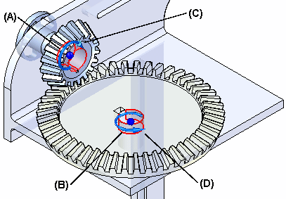
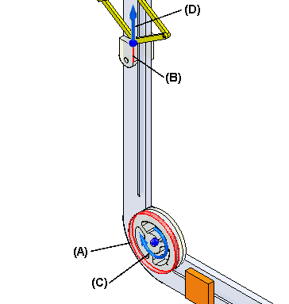
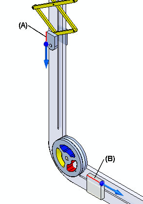
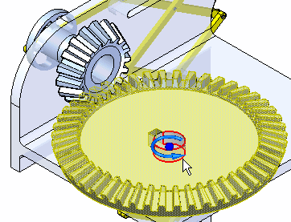

About the Gear relationship
(Home tab→Assemble group→Gear  )
)
The Gear relationship defines how one part moves in relation to another. It supports rotational-rotational, rotational-linear, and linear-linear type movements. The Gear relationship is useful when working with assemblies that contain gears, pulleys, parts that travel in grooves or slots, and hydraulic or pneumatic actuators. It is important to note that a Gear relationship does not physically position the parts in the assembly. The related parts must be positioned using other assembly relationships such as Mate, Align, and Axial Align.
The command bar associated with the Gear relationship is used to define the type of motion, the movement direction, and the amount of motion that one part moves relative to the movement of another part. For more information, see Using the Gear command bar.
Choosing the gear type
The following types of gear relationships can be formed:
- Rotation-Rotation
-
This option is used to define how the rotation of one part results in the rotation of a second part. During the definition, the movement ratio of the first part to the second part (or number of teeth on each respective part) is identified. This relationship is useful when defining movement between two gears or two pulleys.
The relative rotation motion is defined by identifying the direction of rotation of the second part based on the default rotation of the first part. If the default rotation of the second part is not correct, use the Flip button on the command bar to change the movement direction to correctly correspond with the default movement applied to the first part.
Example:This example uses cylindrical faces on two parts (A) and (B) to define the relationship. Notice the symbols that indicate movement direction (C) and (D). In this example, the Ratio/Teeth option on the command bar was set to Teeth, and the number of teeth for each gear is used to specify the movement values.

- Rotation-Linear
-
This option is used to define how the rotation of one part results in the linear movement of a second part. The resulting linear motion of the second part is defined based on the how far the linear part moves for the stated number of rotations of the first part. This relationship is useful when defining movement between a pulley and a part that slides in a groove or slot.
The motion is relative. The direction of movement for the second part is defined based on the default rotation of the first part. If the default movement direction of the second part is not correct, use the Flip button on the command bar to change the movement direction to correctly correspond with the rotational movement defined on the first part.
Example:This example shows using a cylindrical face on a pulley (A) and a linear edge on a part (B) that slides in a slot. Notice the symbols which indicate rotational (C) and linear (D) movement direction. In this example, linear distance part (B) travels is specified the when part (A) rotates one turn. In this example the linear distance that is specified is equal to the circumference of the cylindrical face on the pulley.

- Linear-Linear
-
This option is used to define how the linear movement of one part results in the linear movement of a second part. The movement is defined by specifying the amount of linear movement in the first part and then identifying the amount of resulting linear movement that occurs in the second part. This relationship is useful when defining movement between two parts that slide in grooves or slots.
The direction of movement for the second part is defined based on the default direction of movement of the first part. If the default movement direction of the second part is not correct, use the Flip button on the command bar to change the movement direction to correctly correspond with the default movement direction on the first part.
Example:This example illustrates a linear edge on part (A) and a linear edge on part (B) that slides in a slot. In this example, the linear distance parts (A) and (B) travel is specified. The linear-linear option can also be used when specifying movement that occurs between two hydraulic or pneumatic actuators. If the actuators have different internal diameters, define an appropriate ratio using the value boxes on the command bar.

Using gears with other commands
Other commands can be used to see how the assembly reacts to the applied relationships. To allow movement, the proper parts must be underconstrained or have assembly relationships suppressed in the appropriate axes to observe movement. If all the parts in the assembly are fully constrained, no movement is possible.
Defining and simulating motors
-
Use the motor commands (Home tab→Motors group→ Rotational Motor/Linear Motor/Variable Table Motor) to apply rotational or linear motors to the model and then use the Simulate Motor command (Home tab→Motors group→Simulate Motor) to apply the animation to the model and observe the results (for more information about defining and simulating motors, see Motor commands and Simulate Motor command).

Dragging parts into the assembly
-
Use the Drag Component command (Home tab→Modify group→Drag Component) to move a part in the assembly and observe how the other parts react to the movement (for more information, see Drag Component command). The Motion environment command (Tools tab→Environs group→Motion) is also available. This environment displays the Motion commands that are used to define mechanical joints and forces that cause a mechanism to move (for more information, see Working with Simply Motion).
Engineering Reference
-
Use the features and options of the Engineering Reference tools (Tools tab→Environs group→Engineering Reference) to assist in designing the following:
-
Shaft Designer
-
Cam Designer
-
Spur Gear Designer
-
Bevel Gear Designer
-
Worm Gear Designer
-
Rack and Pinion Gear Designer
-
Sprockets Designer
-
Compression Spring Designer
-
Extension Spring Designer
-
Synchronous Pulleys Designer
-
Pulleys Designer
-
Beams Designer
-
Columns Designer
-
How do I
Using the Mate commandModify the offset value for a Mate relationship
Using the Planar Align command
Apply an axial align relationship
Insert a part in an assembly
Apply a connect relationship
Using the Angle command
Using the Tangent command
Place a cam relationship
Apply a path relationship
Using the Parallel command
Apply a gear relationship
Using the Center-Plane command
Place a Rigid Set relationship
Using the Ground command
Update the working environment
Learn more
Assembly Relationships ManagerLook up more details
About the FlashFit relationshipAbout the Mate relationship
About the Planar Align relationship
About the Axial Align relationship
About the Insert relationship
About the Connect relationship
About the Angle relationship
About the Tangent relationship
About the Cam relationship
About the Path relationship
About the Parallel relationship
Position two parts by matching their coordinate systems
About the Match Coordinate Systems relationship
About the Center-Plane relationship
About the Rigid Set relationship
About the Ground relationship
Update Relationships command